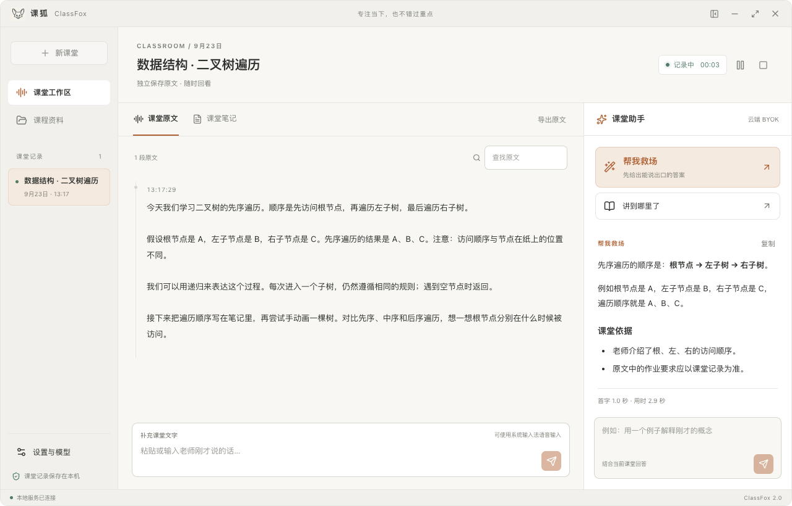
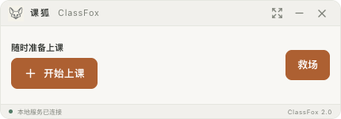

01 — ON YOUR DEVICE本地模式
下载一次，留在本机。
在应用内安装离线语音与问答模型。下载校验、进度、续传与课前预热，都在设置里完成。
- SenseVoice 离线识别 + Qwen 本地问答
- 使用本地模型时，音频与课堂文字在电脑处理
- 首次下载需要网络与约 3 GB 模型空间
01 / A QUIETER WORKSPACE
少切换一个窗口，多跟上一段思路。
原文在左，思路在右。需要的时候，
课堂助手就在你手边。

每堂课独立保存原文，按时间回看、搜索和导出。笔记另存，原文一直在。
救场、进度、追问，结合课堂内容和资料逐段回答。你可以随时停止生成。
把长课堂整理成 Markdown 笔记。回到原文核对，再带到你的学习工作流。
A LITTLE FOX.
A LITTLE MORE FOCUS.

小一点，也刚刚好。03 / YOUR CLASS. YOUR CHOICE.
LOCAL FIRST, ALWAYS YOURS.
不绑定一种模型，不分发共享 Key。
选本地，或接入你熟悉的服务商。
在应用内安装离线语音与问答模型。下载校验、进度、续传与课前预热，都在设置里完成。
语音识别与问答服务可以分别配置。填入自己的 API Key，测试连接，再开始一堂课。
A FEW THINGS TO KNOW
把能做的说清楚，
也把边界留在明处。
应用代码使用 MIT 许可证，可免费下载和使用。本地模型需要自己的计算资源；BYOK 服务可能产生费用，由相应服务商计费。模型和依赖遵循各自的上游许可。
模型需要约 3 GB 下载空间，安装时还需要临时空间，实际内存占用和速度取决于设备。macOS 本地问答运行时要求 13.3 或更高版本；你也可以使用 BYOK。先查看首次使用指南。
macOS 安装包目前使用 ad-hoc 签名，尚未完成 Developer ID 签名与公证；Windows 安装包没有商业代码签名，可能出现系统信誉提示。请从本项目发布页下载并核对校验和，详见常见问题。
微信小程序安排在 v2.5 正式交付。目前只有开发预览，尚未完成 AppID、微信开发者工具、真机与上架验收。v2.0 的正式使用入口是桌面应用。
先退出旧版并备份数据和配置，再通过新版「设置 → 导入旧版本」迁移。原文件保留，已被旧版本覆盖或压缩掉的原文无法恢复。查看完整迁移说明。
READY FOR YOUR NEXT CLASS
安装应用，选择模型。
剩下的，从认真听见第一句话开始。
安装包签名状态见上方常见问题。录音前请取得参与者的知情同意；识别与模型回答需结合课堂原文核实。